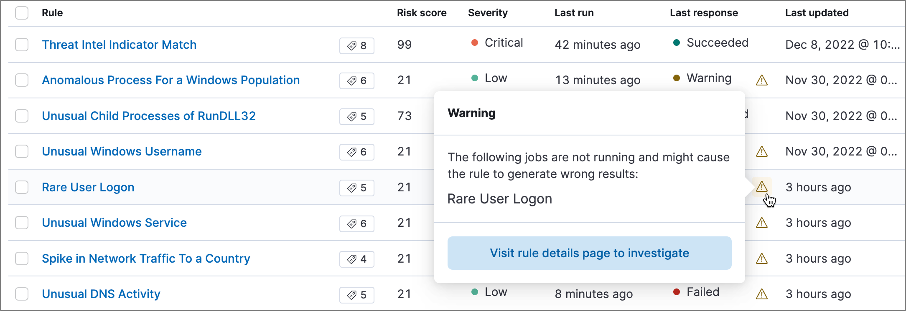

Detect anomalies
editMachine learning functionality is available when you have the appropriate role. Refer to Machine learning job and rule requirements for more information.
You can view the details of detected anomalies within the Anomalies table
widget shown on the Hosts, Network, and associated details pages, or even narrow
to the specific date range of an anomaly from the Max anomaly score by job field
in the overview of the details pages for hosts and IPs. These interfaces also
offer the ability to drag and drop details of the anomaly to Timeline, such as
the Entity itself, or any of the associated Influencers.
Manage machine learning jobs
editIf you have the machine_learning_admin role, you can use the ML job settings interface on the Alerts, Rules, and Rule Exceptions pages to view, start, and stop Elastic Security machine learning jobs.
You can also check the status of machine learning detection rules, and start or stop their associated machine learning jobs:
-
On the Rules page, the Last response column displays the rule’s current status. An indicator icon () also appears if a required machine learning job isn’t running. Click the icon to list the affected jobs, then click Visit rule details page to investigate to open the rule’s details page.
 -
On a rule’s details page, check the Definition section to confirm whether the required machine learning jobs are running. Switch the toggles on or off to run or stop each job.

Elastic Security comes with prebuilt machine learning anomaly detection jobs for automatically detecting
host and network anomalies. The jobs are displayed in the Anomaly Detection
interface. They are available when either:
-
You ship data using Beats or the
Elastic Agent, and Kibana is configured with the required index
patterns (such as
auditbeat-*,filebeat-*,packetbeat-*, orwinlogbeat-*in Project settings → Management → Index Management).
Or
- Your shipped data is ECS-compliant, and Kibana is configured with the shipped data’s index patterns in Project settings → Management → Index Management.
Or
- You install one or more of the Advanced Analytics integrations.
Prebuilt job reference describes all available machine learning jobs and lists which ECS fields are required on your hosts when you are not using Beats or the Elastic Agent to ship your data. For information on tuning anomaly results to reduce the number of false positives, see Optimizing anomaly results.
Machine learning jobs look back and analyze two weeks of historical data prior to the time they are enabled. After jobs are enabled, they continuously analyze incoming data. When jobs are stopped and restarted within the two-week time frame, previously analyzed data is not processed again.
View detected anomalies
editTo view the Anomalies table widget and Max Anomaly Score By Job details,
the user must have the machine_learning_admin or machine_learning_user role.
To adjust the score threshold that determines which anomalies are shown,
you can modify the securitySolution:defaultAnomalyScore advanced setting.